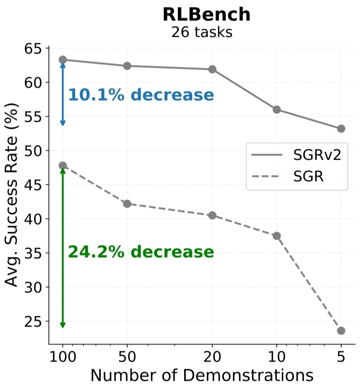
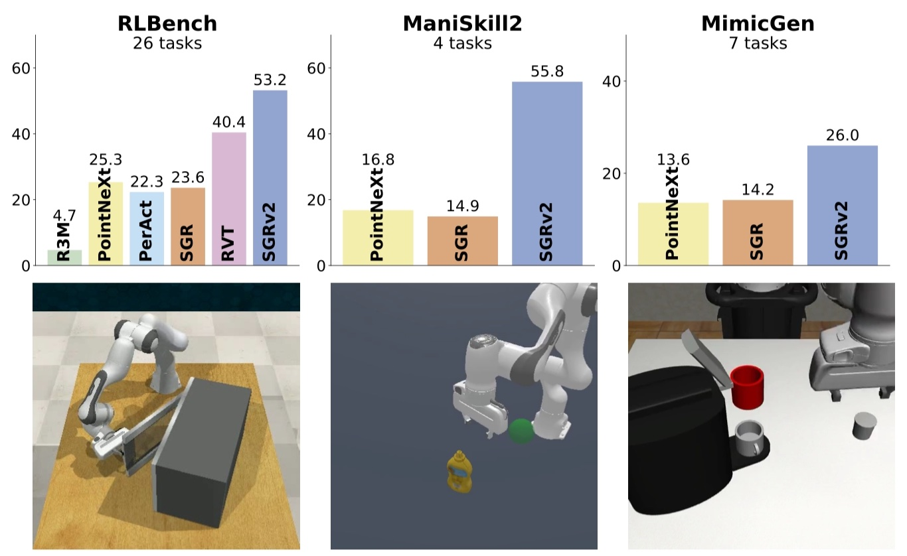
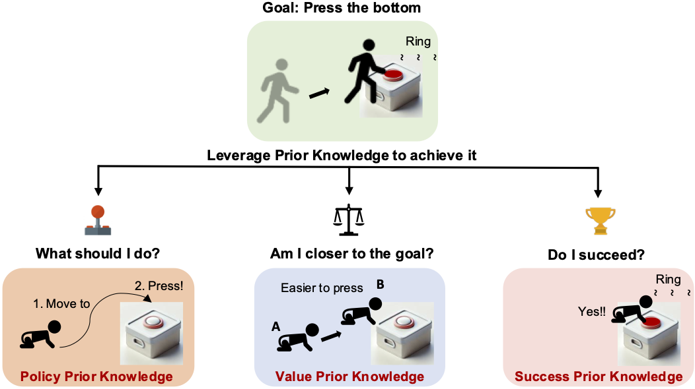

|
Tong Zhang 张彤 I am a Ph.D. student at Institute for Interdisciplinary Information Sciences (IIIS, headed by Turing award winner Prof. Andrew Chi-Chih Yao), Tsinghua University. I am fortunate to be advised by Prof. Yang Gao. Previously, I received my bachelor's degree from Department of Electronic Engineering at Tsinghua University. I am currently a visiting scholar at UC Berkeley, advised by Koushil Sreenath in the Hybrid Robotics Group (HRG) and Berkeley Artificial Intelligence Research Lab (BAIR). My primary research interest is in Embodied AI, which lies at the intersection of Artificial Intelligence and Robotics. I focus on topics such as robotic manipulation, humanoid robots, whole-body control, and representation learning. Recently, I am particularly interested in humanoid loco-manipulation. Email: zhangton20 [AT] mails.tsinghua.edu.cn I expect to graduate in the summer of 2026 and will look for suitable job opportunities. 我预计将在2026年夏天毕业，并将寻求合适的工作机会。
Email / Google Scholar / Github / WeChat (微信) |

|
News |
Publications |
|
HuB: Learning Extreme Humanoid Balance
Tong Zhang*, Boyuan Zheng*, Ruiqian Nai, Yingdong Hu, Yen-Jen Wang, Geng Chen, Fanqi Lin, Jiongye Li, Chuye Hong, Koushil Sreenath, Yang Gao CoRL, 2025 (Oral Presentation) RSS Workshop on Whole-body Control and Bimanual Manipulation, 2025 project page / arXiv / X summary We propose HuB (Humanoid Balance), a framework that enables humanoids to perform challenging quasi-static balance tasks, including extreme single-legged poses such as the Swallow Balance and Bruce Lee's Kick. |
  |
Leveraging Locality to Boost Sample Efficiency in Robotic Manipulation
Tong Zhang, Yingdong Hu, Jiacheng You, Yang Gao CoRL, 2024 project page / arXiv / code / X summary We introduce SGRv2, an imitation learning framework that enhances sample efficiency through improved visual and action representations. Central to the design of SGRv2 is the incorporation of a critical inductive bias-action locality, which posits that robot's actions are predominantly influenced by the target object and its interactions with the local environment. |
 |
Reinforcement Learning with Foundation Priors: Let the Embodied Agent Efficiently Learn on Its Own
Weirui Ye, Yunsheng Zhang, Haoyang Weng, Xianfan Gu, Shengjie Wang, Tong Zhang, Mengchen Wang, Pieter Abbeel, Yang Gao CoRL, 2024 (Oral Presentation) project page / arXiv / code We propose Reinforcement Learning with Foundation Priors (RLFP) to utilize guidance and feedback from policy, value, and success-reward foundation models. Within this framework, we introduce the Foundation-guided Actor-Critic (FAC) algorithm, which enables embodied agents to explore more efficiently with automatic reward functions. |
General Flow as Foundation Affordance for Scalable Robot Learning
Chengbo Yuan, Chuan Wen, Tong Zhang, Yang Gao CoRL, 2024 project page / arXiv / code We build a 3D flow prediction model directly from large-scale RGBD human video datasets. Based on this model, we achieve stable zero-shot human-to-robot skill transfer in the real world. |
Look Before You Leap: Unveiling the Power of GPT-4V in Robotic Vision-Language Planning
Yingdong Hu*, Fanqi Lin*, Tong Zhang, Li Yi, Yang Gao ICRA Workshop on Vision-Language Models for Navigation and Manipulation, 2024 project page / arXiv We introduce ViLa, a novel approach for long-horizon robotic planning that leverages GPT-4V to generate a sequence of actionable steps. ViLa empowers robots to execute complex tasks with a profound understanding of the visual world. |

|
A Universal Semantic-Geometric Representation for Robotic Manipulation
Tong Zhang*, Yingdong Hu*, Hanchen Cui, Hang Zhao, Yang Gao CoRL, 2023 CVPR Workshop on 3D Vision and Robotics, 2023 project page / arXiv / code We present Semantic-Geometric Representation (SGR), a universal perception module for robotics that leverages the rich semantic information of large-scale pre-trained 2D models and inherits the merits of 3D spatial reasoning. |